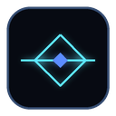

Available now
Horizon for Claude 2.1.19
Horizon turns raw usage percentages into a clear “what happens first?” view. Keep a compact bar near the composer, use a movable mini dock, or open the full Chrome side panel for deeper statistics.